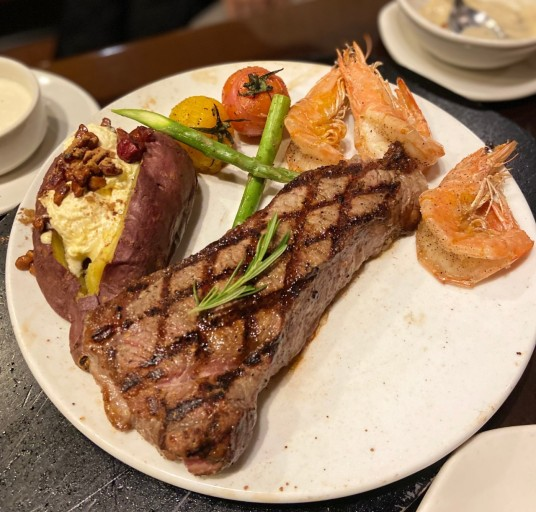

아침부터 저녁까지 먹기만 했다. 아침엔 브런치와 아메리카노를 먹었고 수성못에서 산책을 했다. 어린이날이라 아기들도 많았어. 귀여웡!!!
왠지 스튜디오에서 알바하고 난 이후로 아기들이 귀여워보인다.(학원에서 일할땐 안 그랬는데ㅎㅎ..) 호수 위에는 오리배가 많이 떠있었는데 정말이지 평화롭고 따뜻하고 나른하고...
이른 저녁으로 파전과 손두부와 칼국수를 먹었다. 증말 행복한 날이군. 배만 뽈록해졌다.
(◀이미지를 클릭하면 아웃백 사이트로 연결됩니다)그리고 태형이랑 전화를 했다.
나중에 태형이랑 아웃백가서 부시맨 2개 먹어야지. 투움바 파스타도 먹을거야
일기끝. html 재밌따...난 컴공을 갔어야 했을까? 미디어학과에 잘못 온 것 같다... 후후